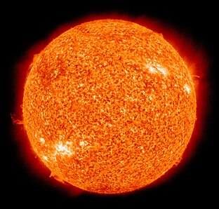

Corpos Celestes
@jeanzin_thegoatSol
- O Sol é a estrela central do Sistema Solar.
- A sua superfície, chamada de fotosfera, é relativamente “fria”, atingindo 5,5 mil graus Celsius.
- É formado por gases e não dispõe de nenhuma superfície sólida.
Mercúrio

- Mercúrio é o planeta mais próximo do Sol.
- Tem uma superfície cheia de crateras causadas por impactos de meteoros.
- Mercúrio possui uma órbita bastante elíptica ao redor do Sol.
Vênus

- Vênus é conhecido como o planeta irmão da Terra devido ao seu tamanho semelhante.
- Possui uma atmosfera densa composta principalmente de dióxido de carbono.
- Vênus é o planeta mais quente do sistema solar, com temperaturas extremamente altas na superfície.
Terra
- A Terra é o terceiro planeta a partir do Sol.
- Possui uma atmosfera que sustenta a vida e uma diversidade de ecossistemas.
- Mais de 70% da superfície da Terra é coberta por água.
Marte

- Marte é conhecido como o "Planeta Vermelho" devido à cor de sua superfície.
- Possui montanhas e vales, incluindo o maior vulcão conhecido, o Monte Olimpo.
- Marte tem uma atmosfera fina composta principalmente de dióxido de carbono.
Júpiter

- Júpiter é o maior planeta do sistema solar.
- Possui uma atmosfera composta principalmente de hidrogênio e hélio.
- Júpiter tem uma grande mancha vermelha, que é uma tempestade gigante há séculos.
Saturno

- Saturno é conhecido por seus anéis espetaculares.
- É o segundo maior planeta do sistema solar.
- Saturno tem muitas luas, incluindo a maior, chamada Titã.
Urano

- Urano é conhecido por sua cor azul-esverdeada distinta.
- Possui anéis e uma inclinação axial extrema, fazendo com que gire de lado.
- Urano tem um grande número de luas, sendo as principais Titânia, Oberon, Umbriel, Ariel e Miranda.
Netuno

- Netuno é o planeta mais distante do Sol.
- Tem uma atmosfera azul e tempestades violentas, incluindo o Grande Ponteiro Escuro.
- Netuno tem 14 luas conhecidas, sendo a maior delas chamada Tritão.